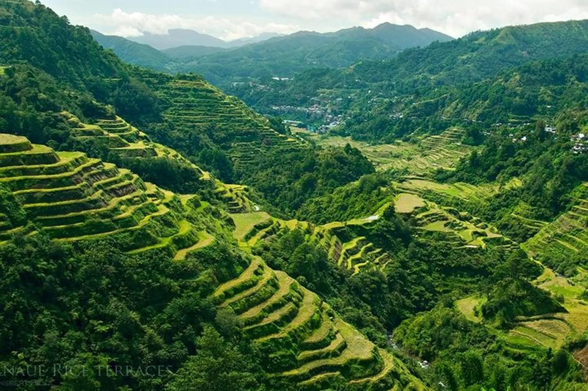
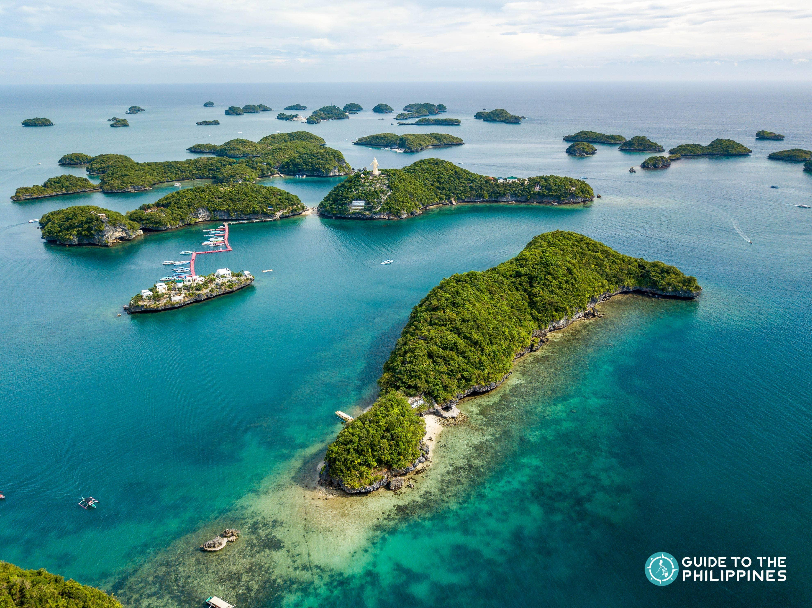

Tourist Spots


This section focuses on specific attractions and landmarks that tourists can visit.
Recommended tourist spots:
- Banaue Rice Terraces - Ancient rice terraces built into the mountains of Ifugao.
- Mayon Volcano - Famous for its nearly symmetrical cone shape.
- Hundred Islands National Park - A group of islands in Pangasinan.
- Mount Pinatubo - Known for its beautiful crater lake.
- Paoay Church - A historic church in Ilocos Norte recognized as a UNESCO World Heritage Site.